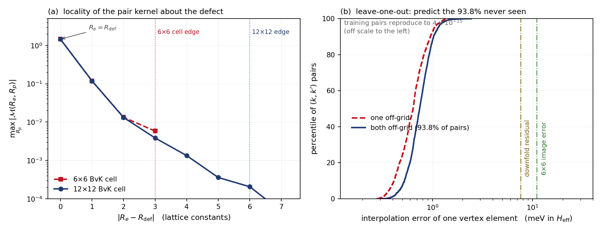
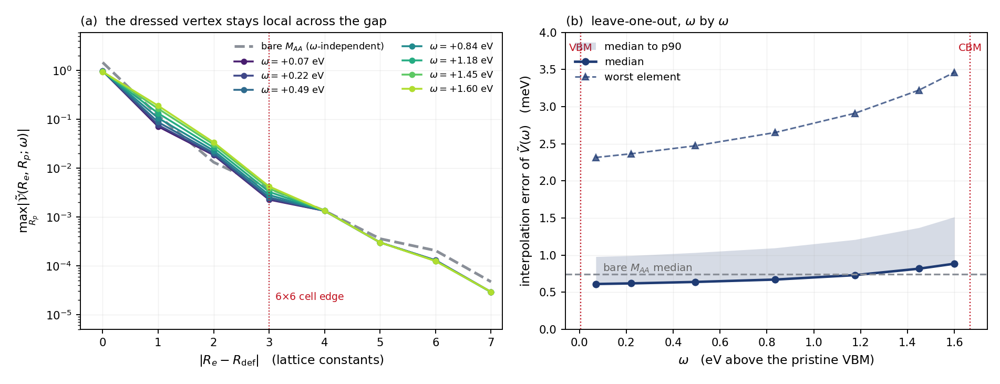

Contents
All methods diagonalize the same active-space effective Hamiltonian and differ only in the rest self-energy $\Sigma$:
with $\varepsilon$ the pristine NSCF eigenvalues, $M_{mn}=\langle\psi_m|\Delta V|\psi_n\rangle$ the (supercell-summed) defect matrix elements, $N_k$ the coarse-grid count. On the $N_k$-commensurate grid the eigenvalues compare level-by-level with the defect supercell — the truth gate.
1. Exact downfolding identity
Split the Hilbert space $\mathcal{H}=A\oplus R$ ($A$ = the $n_{\rm sub}$-band manifold per $k$; $R$ = everything else, semicore + high bands + the full plane-wave tail). Feshbach/Löwdin partitioning of $(\omega-H)^{-1}$ gives the exact eigenvalue condition
with $H_{RR}=P_R(H^0+\Delta V)P_R$. Every method below is one approximation to $\Sigma$. Paths that re-enter $A$ mid-way are excluded from $\Sigma$ by construction — the diagonalization of $H_{\rm eff}$ generates them (no double counting).
2. M-only
3. Bare second order (frozen $\omega_0$)
One bounce through the explicit rest bands, $\Delta V$ to second order:
4. Two-level static (MODE A/B)
All orders in $\Delta V$, still frozen at $\omega_0$. Split $R=R_1\oplus R_2$ ($R_1$: explicit bands $\le 150$; $R_2$: the physical tail) and Schur-factorize $(\omega_0-H_{RR})^{-1}$:
with $G_{22}$ applied by the Neumann ladder $x^{(n+1)}=D_2\,[\tilde s+W_{22}\,x^{(n)}]$, $D_2$ a projected CG solve. Convergence requires $\rho(D_2W_{22})<1$ in every channel: a dressed rest state near $\omega_0$ (a $\rho\to1$ collective mode) makes a finite-rung ladder silently incomplete — the MODE B caveat documented in the results erratum. MODE A replaces the physical $R_2$ by explicit model bands (dense algebra, exact reference gate).
5. $\omega$-resolved block Lanczos (MODE C)
No split, no ladder, no frozen frequency. Sources $\chi_a=P_R\,\Delta V\,|\psi_a\rangle$; block-tridiagonalize the full dressed rest operator with block width $N_A$:
then for any complex $\omega$ the resolvent follows from the block continued fraction (evaluated bottom-up, $S_N=(\omega-A_N)^{-1}$):
The inverse is constructed, never expanded — no convergence-radius condition; new poles of the dressed $H_{RR}$ (collective defect modes) are carried exactly. Levels are quasiparticle fixed points and spectra come free:
One chain serves every $\omega,\eta$; the static methods are the single-point evaluation $\Sigma(\omega_0)$ of the same object.
6. $\chi$ augmentation (basis route)
The alternative philosophy: do not fold $R$ into $\Sigma$ — put the missing directions into the diagonalized space. Bloch-summed atomic orbitals $\chi_{lm}(k)$ at chosen centers, orthogonalized and Löwdin-whitened against the bands, extend the basis:
diagonalized in full. Cures missing-weight push-ups by supplying the directions themselves; requires a defect-specific orbital set (and a truncation rank scanned to saturation).
7. Practical requirement: the fold grid
$M_{mn}=\langle\psi_m|\Delta V|\psi_n\rangle$ is evaluated by folding the supercell $\Delta V$ onto the primitive grid,
implemented as a real-space modulo map $r^{\rm cube}_i \to r^{\rm cube}_i \bmod n^{\rm prim}_i$. It is exact only if
A divisor that is not the multiplicity fails just as badly: folding a 240-point cube of a $6\times$ supercell onto a 30-point primitive grid (ratio 8, perfectly integral) treats the cell as eight primitive cells and returns 15 spurious states in the gap window where there should be 5, with every degeneracy broken. Otherwise the map mis-assigns positions: $\Delta V$ is aliased, C$_3$ degeneracies split by tens of meV and $\lVert\tilde V\rVert$ can be off by tens of percent — with in-gap states still appearing at roughly the right energies, so the failure is silent. A 6$\times$6 cube of $240\times240\times300$ therefore needs a primitive NSCF with an explicit nr1=nr2=40, nr3=300. EDT prints the two grids and the detected multiplicity on the first fold and aborts unless $n^{\rm cube}=N^{\rm sc}n^{\rm prim}$ holds on all three axes; degeneracy splitting of a symmetric defect is the cheap independent check.
The pair may equally be satisfied from the other side, and more cheaply: band-limit the cube onto $162\times162\times216$ by G-space truncation and pair it with the natural ecut-50 grid $27\times27\times216$. Truncation is exact for every Fourier component the coarse grid holds — here it discards $4\times10^{-8}$ of the weight — while the fold cost falls as $n^{\rm cube}$: $5.6$ s per Lanczos step instead of $15.6$, with quasiparticle levels moved by $\le 0.1$ meV.
7a. 2D slabs: skipping the vacuum in the contraction
Most of a slab cell is vacuum, and $V(\mathbf r)\psi(\mathbf r)$ there is multiplying zeros. The FFTs still need the whole grid, but the real-space contraction does not — and with one rank per pool the $z$-slices are contiguous in the flat index, so restricting it is a block list, not an indexing rewrite.
What a dropped slice costs a matrix element is bounded by $\sum_{\mathbf r\in\rm drop}|V(\mathbf r)|\rho(\mathbf r)$, so that product, not the density alone, is the profile to threshold. The distinction is not cosmetic: thresholding $\rho$ alone keeps $87\%$ of the grid at $10^{-5}$ and saves nothing, because in a slab the upper conduction bands are vacuum resonances and $\rho$ has a vacuum plateau. Weighted by $|V|$ (zslab_tol):
zslab_tol | $z$-slices kept | operator unit test | fold (s/step) | level shift |
|---|---|---|---|---|
| off | 216 (100%) | $1.9\times10^{-14}$ | 5.6 | — |
| $10^{-5}$ | 181 (84%) | $5.2\times10^{-8}$ | 5.50 | $0.000$ meV |
| $10^{-4}$ | 158 (73%) | $2.6\times10^{-7}$ | 5.38 | $0.000$ meV |
| $\mathbf{10^{-3}}$ | 95 (44%) | $4.8\times10^{-4}$ | 4.90 | $\mathbf{0.005}$ meV |
| $10^{-2}$ | 46 (21%) | $3.7\times10^{-2}$ | 4.50 | $6.3$ meV |
| $5\times10^{-2}$ | 30 (14%) | $1.0\times10^{-1}$ | 4.40 | $17$ meV |
$10^{-3}$ is the knee: $44\%$ of the grid for a $0.005$ meV shift. Note that the Lanczos matrices themselves move much earlier ($\lVert\Delta A\rVert$ reaches $0.4$ on a scale of $31$ at $10^{-3}$) while the levels do not — the basis rotates but spans the same space, which is why the levels, not the matrices, are the acceptance test.
The saving is real but capped, and the profile says why: after the coarse cube, $V\!\cdot\!\psi$ is only $1.7$ s of the $5.6$ s fold, and $10^{-3}$ cuts it to $0.9$ s — exactly proportional to the grid, but $12\%$ of the step. The largest remaining item is the KB nonlocal projector work ($1.3$ s), which is where the next factor has to come from.
7b. The $k$-grid is free: the supercell is a box, not a periodicity
The supercell exists to capture one isolated defect, not because we want a defect array. EDI builds the fold accordingly — on the fly, at the exact $q=\mathbf k_f-\mathbf k_i$, with no BZ wrap, and with the phase running over the whole cube (ed_coarse_full_q):
which is the finite-box transform of a localized $\Delta V$. It is defined, and generically nonzero, for arbitrary $q$ — so $\langle\psi_{\mathbf k}|\Delta V|\psi_{\mathbf k'}\rangle$ connects any pair of $k$-points and the $k$-grid need not match the supercell. (Wrapping $q$ into the first BZ without the compensating phase is what would be wrong; MODE C's canonical storage applies it explicitly, $V_{q+G}(\mathbf r)=e^{iG\cdot\mathbf r}V_q(\mathbf r)$, exact because $e^{iG\cdot\mathbf R}=1$.) Measured on a $12\times12$ grid against a $6\times6$ cube: matrix elements between $k$-points differing by a non-supercell vector reach $0.975$ of the largest within-supercell one. Treating the cube as a periodicity would discard most of the scattering channels.
Only the real-space modulo map constrains the grids, and that constraint is §7's $n^{\rm cube}=N^{\rm sc}n^{\rm prim}$.
7c. Two different $12\times12$ calculations
Because $H_{\rm eff}=\varepsilon_A+(M_{AA}+\Sigma)/N_k$ carries the Born–von-Kármán normalization, $N_k$ is the dilution: one defect per $N_k$ primitive cells. Two inequivalent things therefore go by "$12\times12$":
| $k$-set | defect density | supercell truth? | |
|---|---|---|---|
| coset-decomposed | four shifted $36$-$k$ runs | $1/36$ cells | yes — the $6\times6$ cell, at four supercell $k$ |
| direct | one $144$-$k$ run | $1/144$ cells | no — would need a $431$-atom cell |
The coset route splits the grid into $(N_k/N^{\rm sc})^2$ shifted runs of the designed size, each of which folds to one supercell $k$-point. It holds the concentration fixed, which is exactly what makes it comparable to a supercell calculation — it is a validation device, not the physics target. The direct run is the physics: full $q$ resolution at a four-times more dilute defect, the limit EDI is built for. The two agree where they must — the coset-diagonal blocks of the direct $144$-$k$ vertex reproduce the four shifted $36$-$k$ runs to $2\times10^{-6}$ on a block scale of $66$ (independent NSCF runs, so this is a gauge-invariant comparison of block eigenvalues).
8. From the downfold to the $T$-matrix and the electron–defect self-energy
The downfold output is the partially scattered vertex — rest space summed to all orders, active space not yet iterated:
With the free active propagator $G^0(\omega)=\big[\omega+i\eta-\varepsilon_A\big]^{-1}$ (diagonal), the active-space multiple scattering is resummed by the Lippmann–Schwinger equation
so that the dressed propagator and the spectral function are
The last identity is the bookkeeping check: $T$ is a repackaging of the same $H_{\rm eff}$, so levels, DOS and $T$-matrix poles are one object. Division of labour: rest scattering lives in $\Sigma$, active scattering in the $[1-\tilde VG^0]^{-1}$ resummation — never both (no double counting).
Electron–defect self-energy. In the dilute single-site limit at defect density $n_d$ (defects per primitive cell) the disorder-averaged self-energy of a Bloch state is the diagonal $T$-matrix element,
and its imaginary part gives the quasiparticle linewidth, equivalently (optical theorem) a golden rule with $T$ in place of the bare matrix element:
with the momentum-relaxing (transport) rate obtained by inserting the usual $\big(1-\mathbf v_{n\mathbf k}\!\cdot\!\mathbf v_{m\mathbf k'}/|\mathbf v_{n\mathbf k}|^{2}\big)$ weight. Setting $T\to\tilde V\to M_{AA}/N_k$ recovers the standard Born-level electron–defect matrix elements — the $T$-matrix is their all-order completion.
Two practical notes. (i) As computed on an $N_k$ grid the construction describes exactly one defect per $N_k$ cells, $n_d = 1/N_k$; a different dilute density means re-solving $T$ on a finer grid (the vertex itself is density-independent). (ii) $\tilde V(\omega)$ is smooth in $\mathbf k$ (defect-localized, hence short-ranged in $\mathbf R,\mathbf R'$) and is the object to Wannier-interpolate; $T$ is not smooth — its bound-state poles and resonances must be generated by solving $[1-\tilde VG^0]^{-1}$ on the fine grid. With MODE C the vertex carries its true frequency dependence, so $T(\omega)$ has the correct analytic structure; static vertices pinned at $\omega_0$ displace features by tens of meV once $|\omega-\omega_0|\sim 1$ eV.
9. Does the vertex survive Wannier interpolation?
Section 7c leaves the method with a hard limit: the fold and the reorthogonalization both scale as $N_k^3$ at fixed rank count, and $N_k$ is the defect concentration, so a finer mesh is simultaneously more expensive and a different physical system. The way out is the Lu–Bernardi construction — carry the vertex in a pair-Wannier basis,
and read it back at any $\mathbf k$. That is only legitimate if $\mathcal M$ decays in both arguments, so the question has to be measured, not assumed.
9a. Both indices are electron positions; the defect is the origin
$\mathcal M(\mathbf R_e,\mathbf R_p)=\langle w_{\mathbf R_e}|\Delta V|w_{\mathbf R_p}\rangle$ — both labels are Wannier lattice vectors of the electron. The defect is not a third index. It is where $\Delta V$ lives, hence the point the kernel decays about, and in EDI's own supercells it sits at the origin so it never appears explicitly. Ours sits at the cell centre, $\mathbf R_{\rm def}=(3,3)$ in primitive lattice units, which is why it does. The conventional way to remove it is a translation,
after which the ordinary origin-centred Wigner–Seitz construction applies. Choosing the WS representatives about $\mathbf R_{\rm def}$ instead, as done here, is the same thing.
Three implementations agree on this, up to a change of variables. EDI's code transforms the two indices separately — edbloch2wane over the electron $k$ at fixed $q$, edbloch2wanr over $q$ — the electron–phonon parametrization, and it already writes a decay.M file carrying exactly the envelope diagnostic plotted below. The repository's ft_convention.md records the symmetric Lu–Bernardi double transform, which is the form used here, and this project's earlier tmatrix_p6_wannier.py uses that form with a defect-centred truncation. The two parametrizations are a shear, $\mathbf R_e^{\rm EDI}=\mathbf R_p-\mathbf R_e$ and $\mathbf R_p^{\rm EDI}=\mathbf R_p$: EDI's first index is the separation of the two Wannier functions, ours is each one's distance from the defect.
Why the origin matters. $\mathcal M$ is built on Born–von-Kármán representatives, and images differ by $N^{\rm sc}\mathbf a$. On the coarse grid $e^{i\mathbf k\cdot N^{\rm sc}\mathbf a}=1$, so the choice is invisible — the transform inverts exactly whatever you pick. On a finer grid it is not $1$, and a wrong representative aliases: measured, that turns a $1$ meV prediction into a $300$ meV one. Note the asymmetry — truncating a coarse-grid kernel (what tmatrix_p6_wannier.py does) is insensitive to this; only interpolation is.
$\mathbf R_{\rm def}$ is read from the structure — the S present in the pristine cube and absent from the defect cube. Taking it from the peak of the kernel diagonal also works, but returns a representative valid only on the lattice it was found on: $(3,3)\equiv(-3,-3)$ modulo 6 but not modulo 12, so the same "empirical centre" is right for a $6\times6$ R-lattice and wrong for a $12\times12$ one. That is the mistake that produced the $300$ meV run here.
9b. Leave-one-out on the vertex
The direct $144$-$k$ run (section 9 of the results note) supplies $M(\mathbf k,\mathbf k')$ on all $144^2$ pairs in one Wannier gauge — the same wavefunctions are wannierized, exclude_bands = 1-6, 18-20 leaving exactly the 11 active bands 7–17 as an isolated composite group, so $U$ is unitary ($\lVert U^\dagger U-1\rVert=2\times10^{-10}$, $\Omega_D=0.03$ Å$^2$). Build the kernel from the $\Gamma$ coset alone — a complete $6\times6$ dataset, $6.2\%$ of the pairs — and predict the rest.

Panel (a) is every one of the $2\,982\,529$ matrix elements against the radius at which a spherical truncation would drop it; the envelope falls from $1.46$ on site to $2\times10^{-4}$ at $6a$ and the median element is four decades below it throughout. Panel (b) is the diagonal $\mathcal M_{mm}(\mathbf R,\mathbf R)$ of each Wannier orbital, which shows what the defect actually couples to: the three S $p$ orbitals on the vacancy sublattice start at $1.43$–$1.46$, the five Mo $d$ at $0.05$–$0.10$, and the far S $p$ at $0.003$ — and all of them are below $10^{-6}$ by $6a$.
| pairs | count | median | p90 | max |
|---|---|---|---|---|
| both on the $6\times6$ grid (training) | 1296 | $4\times10^{-15}$ | — | $1\times10^{-14}$ |
| one off-grid | 7776 | $0.64$ meV | $0.95$ | $1.53$ |
| both off-grid | 11664 | $\mathbf{0.74}$ meV | $1.03$ | $2.44$ |
(Element-wise, in the same gauge; quoted as $\delta M\,\mathrm{Ry}/N_k$, the scale at which a vertex element enters $H_{\rm eff}$.) The training pairs come back at machine precision, which certifies the transform rather than the physics; the verdict is the $93.8\%$ that were never seen, and they land at about 1 meV.
Panel (a) says why. The kernel falls from $1.46$ on site to $2\times10^{-4}$ at $6a$, and the $6\times6$ and $12\times12$ curves — the same quantity measured in two different BvK cells — lie on top of each other wherever they overlap, so the smaller cell is not aliasing, only truncating early. A $12\times12$ coarse grid buys another factor of four of decay beyond what a $6\times6$ already delivers.
Set against the other errors in this project — a $+7.6$ meV downfold residual and $4$–$11$ meV of periodic-image error in the $6\times6$ reference itself — interpolation would not be the dominant error. What this does not yet test is the $\omega$-dependent part: only the bare $M_{AA}$ was interpolated here. $\Sigma^R(\omega)$ should be at least as local for $\omega$ in the gap, since it carries an extra exponentially decaying resolvent whose range is set by the distance from $\omega$ to the rest spectrum — but that is an argument, and the same leave-one-out is the measurement.
9c. The $\omega$-dependent vertex: sample it, do not freeze it
$\omega_0=-0.019$ eV sits below the gap (the pristine edges are $+0.0058$ and $+1.6679$), so freezing $\Sigma^R$ there is exact at $\omega_0$ and degrades linearly away from it — which is where the defect levels are:
| level | static $\Sigma(\omega_0)$ | $\omega$-resolved | cost of freezing |
|---|---|---|---|
| valence-edge resonances | $-0.0081$, $-0.0080$ | $-0.0081$, $-0.0080$ | $0$ meV |
| $a_1$ in gap | $+0.0917$ | $+0.0735$ | $18.2$ meV |
| degenerate pair | $+1.2258$ | $+1.2023$ | $23.5$ meV |
| conduction-edge resonance | $+1.6763$ | $+1.6756$ | $0.7$ meV |
That is larger than the $+7.6$ meV downfold residual, the $4$–$11$ meV image error and the $0.74$ meV interpolation error — adopting it would make it the leading error in the chain.
It is also unnecessary. Every pole of $\Sigma^R$ lies outside the active manifold, so across the gap the nearest singularity is more than $3$ eV away and $\Sigma^R(\omega)$ is analytic there. Sample it at 7 Chebyshev nodes on $[0.05,1.62]$ eV, fit each element with a 4th-order Chebyshev polynomial, hold one node out. Three acceptance tests:
- (a) held-out node ($0.835$ eV): $\max|\Delta\Sigma|=2.8\times10^{-4}$ on $\lVert\Sigma\rVert=0.60$, i.e. $\mathbf{0.026}$ meV.
- (b) quasiparticle fixed points recomputed from the fit: of the levels inside the window, $\max|{\rm fit}-{\rm direct}| = \mathbf{0.201}$ meV ($+0.0735\to+0.0733$; the $+1.2023$ pair to $0.01$ meV). Extrapolated levels outside the window stay within $1.4$ meV.
- (c) leave-one-out on $\tilde V(\omega)$, the half section 9b could not test. It passes at every $\omega$ and the degradation across the gap is mild.

| $\omega$ (eV above VBM) | $+0.07$ | $+0.49$ | $+1.18$ | $+1.60$ |
|---|---|---|---|---|
| leave-one-out median | $0.610$ | $0.638$ | $0.730$ | $0.884$ meV |
| on-site $\lVert\tilde{\mathcal V}\rVert$ | $0.974$ | $0.966$ | $0.950$ | $0.940$ |
| at $6a$ | $1.76\times10^{-5}$ | $1.76$ | $1.77$ | $1.81\times10^{-5}$ |
The dressed vertex interpolates better than the bare one at the bottom of the gap ($0.61$ vs $0.74$ meV) — the extra decaying resolvent makes it more local, as argued — and only $45\%$ worse at the top. Panel (a) shows the mechanism: $\tilde{\mathcal V}$ is slightly longer-ranged than $M_{AA}$ at $1$–$2a$ but joins the same tail beyond $4a$, and the seven $\omega$ curves lie almost on top of each other.
One transform, not one per $\omega$. The pair-Wannier transform is linear, so writing $\tilde V(\omega)=\sum_i f_i(\omega)C_i$ puts the whole $\omega$ dependence on scalar coefficients: the 5 fit matrices are transformed once and $\tilde{\mathcal V}(R_e,R_p;\omega)$ is a 5-term weighted sum thereafter. (A pole representation would work too, and cheaply — $W_n$ is rank one, so $\mathcal W_n(R_e,R_p)=\tilde u_n(R_e)\otimes\tilde u_n^*(R_p)$ factorizes into single-index transforms.) In any case the transform is seconds while the continued fraction is $6$ s per $\omega$, so the quantity to economize is continued-fraction calls, not transforms. The whole of section 9c cost $7.4$ minutes on one node.
(An earlier note here quoted $105$ s per continued fraction. That measurement came from a thread-starved run — the $N_A=396$ chain took $89$ s in the same job, which is not compute-bound. Properly threaded it is $6$ s.)
9c-bis. Does the chain need full reorthogonalization?
Every Krylov block is stored so that each new one can be orthogonalized against all of them, and that storage — not the arithmetic — is what caps the chain length and blocks SOC. The textbook justification is that a three-term recurrence loses orthogonality catastrophically. Whether it does here is measurable, and it does not.
Running the same $6\times6$ chain ($N_S=24$, the longest we use) while orthogonalizing against only the last $m$ blocks:
| $m$ | $\max_{ij}\lVert Q_i^\dagger Q_j - \delta_{ij}\rVert$ | levels | $\lVert\Delta A\rVert$ | orth (s) | chain (s) |
|---|---|---|---|---|---|
| all | $6.038\times10^{-9}$ | reference | — | $152$ | $305$ |
| 2 | $6.038\times10^{-9}$ | $\mathbf{0.000}$ meV | $2.8\times10^{-14}$ | $\mathbf{33}$ | $\mathbf{185}$ |
| 4 | $6.038\times10^{-9}$ | $0.000$ meV | $2.1\times10^{-14}$ | $52$ | $204$ |
| 8 | $6.038\times10^{-9}$ | $0.000$ meV | $2.5\times10^{-14}$ | $88$ | $241$ |
The orthogonality is identical to four figures across all four, the levels are bit-identical, the chain matrices differ by $3\times10^{-14}$ on a scale of $31$, and an inertia count finds zero Ritz values in the gap in every case — no ghosts. Full reorthogonalization is doing nothing.
The reason is the one the theory gives: loss of orthogonality is triggered by a converged Ritz value (Paige), and $24$ blocks of width $396$ in a space of $\sim10^6$ dimensions converge none. The residual $6\times10^{-9}\approx\sqrt\epsilon$ is not a Lanczos loss at all — it is identical in every variant, so it comes from the single-pass classical Gram--Schmidt within each step, and a second pass against the last two blocks would remove it at negligible cost.
What this buys is memory, not time. The speedup is only $1.65\times$, but $Q_s$ drops from $N_S+1$ blocks to two:
| full | two blocks | |
|---|---|---|
| $12\times12$, no SOC, $N_S=16$ | $531$ GB | $\mathbf{62}$ GB |
| $12\times12$ with SOC | $2.12$ TB | $\mathbf{250}$ GB |
SOC at $12\times12$ multiplies $N_A$ by two and the state length by two, so the fold costs $4\times$, reorthogonalization $8\times$ and memory $4\times$. With full reorthogonalization that is $2.75$ TB of fixed arrays — eight 375-GB nodes, and the pool structure caps the rank count at $N_k$, so those nodes must be run sparsely populated. With two-block storage it is under a terabyte: one high-memory node.
The honest scope: this is measured for $N_S \le 24$ on this system. A longer chain, or one whose spectrum lets a Ritz value converge, would behave differently. The right implementation is therefore not a hard-coded two blocks but partial reorthogonalization — keep the (cheap) orthogonality monitor and reorthogonalize fully only when it degrades. Here it would never trigger; elsewhere it protects automatically.
9d. How small can the active space be?
MoS$_2$ bands $13$–$17$ — the highest valence band and the four lowest conduction bands — are an isolated group (gaps $+0.018$ eV below and $+0.565$ eV above), so a 5-band Wannier model needs no disentanglement. It would shrink $N_A$ from $1584$ to $720$: the fold scales as $n_b$ and reorthogonalization as $n_b^2$, so $2.2\times$ and $4.8\times$ cheaper. Restricting $M_{AA}$ to those bands and repeating the leave-one-out measures what it costs:
| Wannier space | projections | spread / WF | l-o-o median | p90 |
|---|---|---|---|---|
| 11 band | Mo:$d$ + S:$p$ | $\mathbf{1.71}$ Å$^2$ | $\mathbf{0.744}$ meV | $\mathbf{1.03}$ |
| 5 band | Mo:$d$ | $4.88$ | $3.296$ | $8.62$ |
| 5 band | Mo:$d_{z^2},d_{x^2-y^2},d_{xy}$ + S:$s$ | $4.87$ | $3.323$ | $8.79$ |
| 5 band | Mo:$p$ + S:$s$ | $6.25$ | $3.970$ | $7.82$ |
The kernel envelope says why. Eleven bands: $1.46\to0.119\to1.3\times10^{-2} \to\cdots\to2.1\times10^{-4}$, four decades by $6a$. Five bands (Mo:$d$): $0.225\to0.287\to3.1\times10^{-2}\to\cdots\to1.1\times10^{-3}$, only $2.3$ decades — and the on-site term is smaller than the $|R|=1$ one, so the kernel is not even peaked at the defect. The Wannier functions are too spread for the defect's weight to stay on its own cell.
This is not a gauge that needs more optimization. All three 5-band choices give the same $\Omega_I=21.810$ Å$^2$ — it is gauge-invariant, fixed by the manifold — against $17.704$ for eleven bands, i.e. $4.36$ versus $1.61$ Å$^2$ of invariant spread per Wannier function. Excluding the S $p$ bands that hybridize with the manifold costs localization that no minimization can recover.
Verdict: keep eleven bands on the interpolation route. A $p90$ of $8.6$ meV would put interpolation alongside the downfold residual and the image error as a leading term, in exchange for a factor of a few in a step that is no longer the bottleneck. Five bands remain attractive for coarse-grid levels alone, where $\Omega_I$ does not enter; there Mo:$d$ is the right projection — Mo:$p$+S:$s$ is the worst of the three tested, as the $d$-dominated character of the manifold would suggest.
10. Summary
| method | $\Sigma$ | order in $\Delta V$ | $\omega$ |
|---|---|---|---|
| M-only | $0$ | 0 | — |
| bare-150 | one rest bounce | 2 | frozen $\omega_0$ |
| MODE A/B | Schur two-level + ladder | all (per channel: rung-limited) | frozen $\omega_0$ |
| MODE C static | block-Lanczos CF at $\omega_0$ | all, exact | frozen $\omega_0$ |
| MODE C $\omega$-res | block-Lanczos CF | all, exact | resolved |
| $\chi$ aug. | none (basis enlarged) | all within the enlarged basis | — |
Numbers and gates: see the Two-level results page.